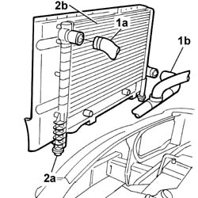
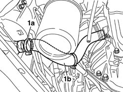
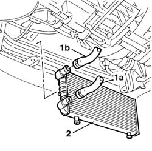
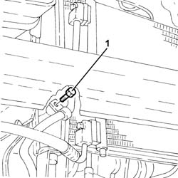
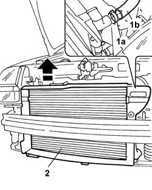
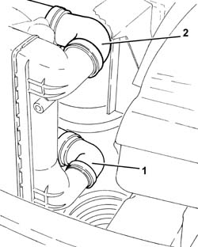
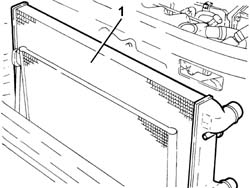

1088B20 engine cooling radiator - r + r
- Path
- Procedures > 10 ENGINE > 1088 ENGINE COOLING > 1088B ENGINE COOLING RADIATOR - R + R > 1088B20 engine cooling radiator - r + r
- Kind
- repair procedure (removal / refitting; the operation number is the code)
- Applies to
- all engines; all production periods
- Interactive page
- https://sloeber94.github.io/elrnDB-fDbl/en/#/2584299
Applies to: all engines; all production periods
 Removing
Removing
 Refitting
RefittingDisconnect the battery negative terminal.
7055B54 under-engine guard - r r
1088E10 radiator cooling fan - r + r
1048A10 air cleaner filtering element - replace
Fit a suitable container for coolant recovery.
1. Disconnect the upper hose (1a) and the lower hose (1b) from the engine cooling radiator.
2. Release the radiator (2b) from the retainers (2a), removing it from the upper part of the engine compartment.

Applies to: all engines; all production periods
Removing
RefittingPlace the car on the ramp.
Disconnect the battery negative terminal.
 | Name | Connector |
|---|---|---|
- | Battery | A1 |
7055B54 under-engine guard - r r
1. Place a suitable container under the car to collect the engine coolant; then open the band (1a) and disconnect the radiator bottom pipe (1b).

Applies to: all engines; all production periods
Removing
RefittingDisconnect the battery negative terminal.
1048A10 air cleaner filtering element - replace
7055B54 under-engine guard - r r
1088E10 radiator cooling fan - r + r
Fit a suitable recipient for coolant recovery.
1. Disconnect the upper hose (1a) and the lower hose (1b) from the engine cooling radiator.
2. Prise the radiator out if the rubber retainers and remove the radiator from the bottom of the engine bay

Applies to: all engines; all production periods
Removing
RefittingPosition the vehicle on the ramp.
Proceed with the removal 5530B10 battery - r+r .
Proceed with the removal 5530B52 Battery DRIP TRAY/SUPPORT - R.R. .
Proceed with the removal 7055B54 under-engine guard - r r .
Proceed with the removal 1048A10 air cleaner filtering element - replace .
Proceed with the removal 1048B50 turbo charger intercooler - r + r
Proceed with the removal 7210E10 R.R. FRONT BUMPER .
Proceed with the removal 1088E11 fans with single engine duct - r+r .
1. Undo the bolt fixing mounting bracket for the pipe from the air conditioning compressor to the condenser to the radiator.

Applies to: all engines; all production periods
Refitting
RemovingFit the radiator, fixing it to the retaining seals on the underlying cross member
Connect the upper and lower radiator pipes and secure them with the retaining band
1088E10 radiator cooling fan - r + r
1048A10 air cleaner filtering element - replace
0010T21 coolant check density and top up if necessary
7055B54 under-engine guard - r r
Connect the battery negative terminal.
Applies to: all engines; all production periods
5530B52 Battery DRIP TRAY/SUPPORT - R.R.
1048A32 sleeve from air cleaner to intake manifold - r + r
1048A10 air cleaner filtering element - replace
1088E10 radiator cooling fan - r + r
1. Open the band (1a) and disconnect the radiator top pipe (1b).
2. Release the radiator from the mountings on the crossmember and withdraw it from the top of the car.

Applies to: all engines; all production periods
Refitting
RemovingFit the radiator, fixing it to the retaining seals on the underlying cross member
Connect the upper and lower radiator pipes and secure them with the retaining band
1088E10 radiator cooling fan - r + r
1048A10 air cleaner filtering element - replace
7055B54 under-engine guard - r r
Connect the battery negative terminal.
Applies to: all engines; all production periods
1. Disconnect the lower coolant inlet hose from the radiator, radiator side.
2. Disconnect the upper coolant inlet hose to the radiator, radiator side.

Applies to: all engines; all production periods
Refitting
RemovingPlace the radiator in its original seating and make sure that the bottom mountings are seated on the crossmember.
Connect the radiator top pipe and bottom pipe and secure the pipes via the bands.
1088E10 radiator cooling fan - r + r
1048A10 air cleaner filtering element - replace
1048A32 sleeve from air cleaner to intake manifold - r + r
5530B52 Battery DRIP TRAY/SUPPORT - R.R.
Connect the battery negative terminal.
| Name | Connector |
|---|---|---|
- | Battery | A1 |
7055B54 under-engine guard - r r
Remove the car from the ramps.
Applies to: all engines; all production periods
1. Remove the engine cooling radiator via the engine compartment.

Applies to: all engines; all production periods
Refitting
RemovingPlace the engine cooling radiator back in its housing.
Connect the upper coolant inlet hose to the radiator, radiator side.
Connect the lower coolant outlet hose from the radiator, radiator side.
Tighten the bolt fixing the mounting bracket for the pipe between the compressor and the condenser to the radiator.
Proceed with the refitting 1088E11 fans with single engine duct - r+r .
Proceed with the refitting 7210E10 R.R. FRONT BUMPER .
Proceed with the refitting 1048B50 turbo charger intercooler - r + r
Proceed with the refitting 1048A10 air cleaner filtering element - replace .
Proceed with the refitting 7055B54 under-engine guard - r r .
Proceed with the refitting 5530B52 Battery DRIP TRAY/SUPPORT - R.R. .
Proceed with the refitting 5530B10 battery - r+r .
Refill the engine cooling system with coolant 0010T20 coolant change .
Remove the car from the ramp.
Topics linked from this page (11)
- 0010T20 coolant change
- 0010T21 coolant check density and top up if necessary
- 1048A10 air cleaner filtering element - replace
- 1048A32 sleeve from air cleaner to intake manifold - r + r
- 1048B50 turbo charger intercooler - r + r
- 1088E10 radiator cooling fan - r + r
- 1088E11 fans with single engine duct - r+r
- 5530B10 battery - r+r
- 5530B52 Battery DRIP TRAY/SUPPORT - R.R.
- 7055B54 under-engine guard - r r
- 7210E10 R.R. FRONT BUMPER